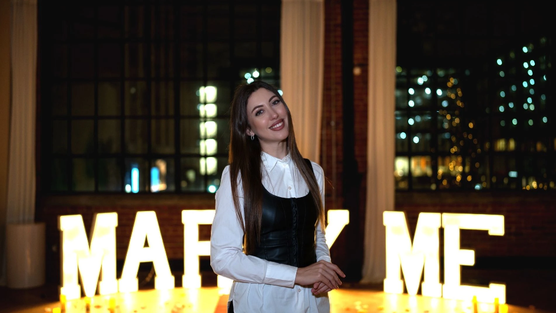

Personal first
No copied templates. Every concept begins with your story and your person.
The heart behind Romantic Matters
Planner, creative dreamer and calm presence behind your most meaningful moments.

Founder · Creative planner · Toronto
My story
My name is Alona, and I am the founder and owner of Romantic Matters in Toronto.
With over 5 years of experience in event planning, I’ve had the joy of turning countless moments into unforgettable memories. My mission is simple—to create events that touch hearts, inspire emotions, and tell your unique story.
I listen carefully to the details that matter: the song that means something, the flowers they always notice, the place connected to a memory, and the little surprises that make a moment impossible to forget.
Whether we’re planning a marriage proposal, a romantic date or a joyful celebration, my role is to make the process feel clear, thoughtful and exciting—from our first conversation until the final detail is in place.
With love,
Alona
No copied templates. Every concept begins with your story and your person.
Every detail supports the mood, meaning and experience you want to create.
You stay present for the moment while I quietly take care of everything else.
Have a story to share?